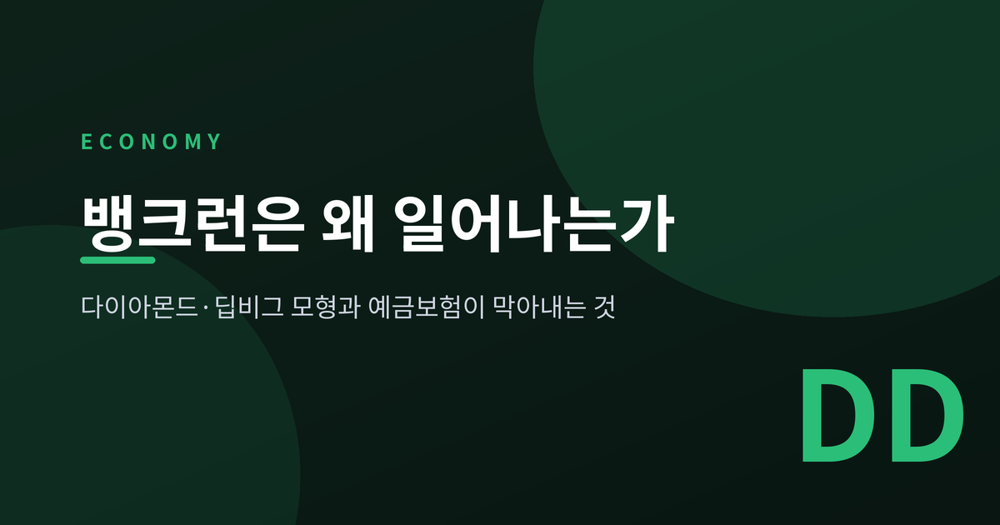
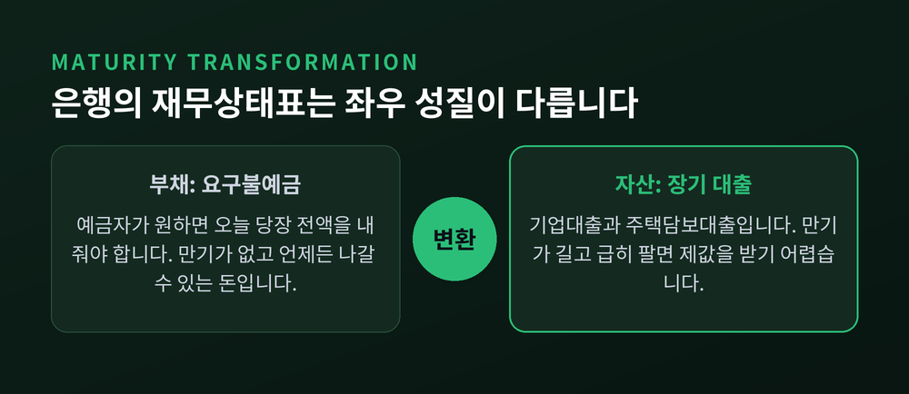
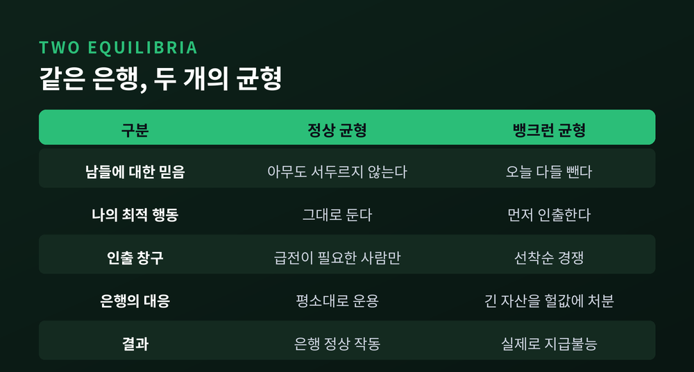
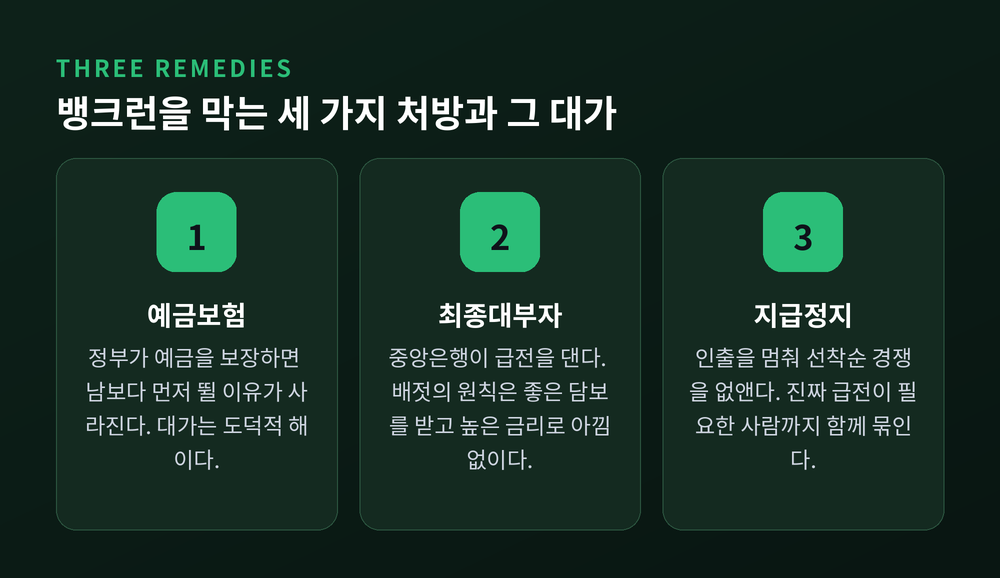
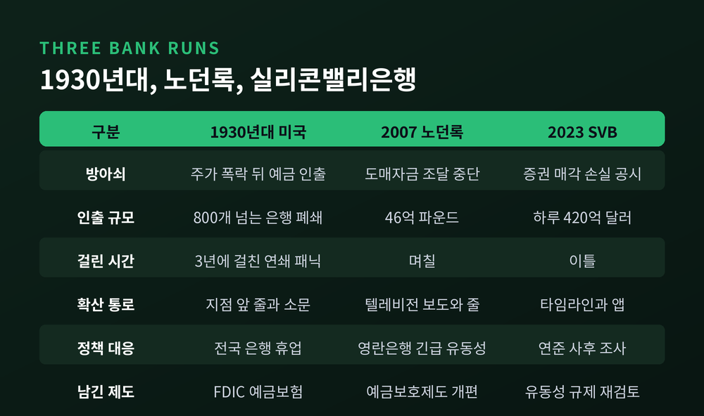
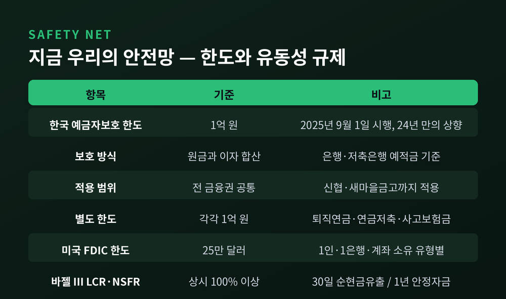

이번 글에서는 뱅크런이 일어나는 구조를 정리해 보겠습니다. 자산에 별문제가 없는 은행도 무너질 수 있는 이유, 그리고 예금보험과 최종대부자가 그 지점에서 무엇을 막아내는지 다룹니다. 1983년의 이론부터 2023년 실리콘밸리은행까지 순서대로 짚어보겠습니다.
은행의 재무상태표는 좌우가 성질이 다릅니다.
자산 쪽에는 기업대출과 주택담보대출이 있습니다. 만기가 길고, 당장 팔아 현금으로 바꾸기 어렵습니다. 부채 쪽에는 요구불예금이 있습니다. 예금자가 원하면 오늘 당장 전액을 내줘야 합니다.
이 비대칭을 만기 변환이라고 부릅니다. 짧은 돈을 모아 긴 돈으로 바꿔주는 일입니다.
경제 전체로 보면 대단히 유용한 기능입니다. 개인은 언제든 꺼낼 수 있는 형태로 돈을 두고 싶어 하고, 공장과 주택은 몇 년짜리 자금을 필요로 합니다. 은행이 그 사이에서 시차를 흡수합니다.
그 대가로 은행은 예금 전액을 금고에 두지 않습니다. 일부만 지급준비금으로 남기고 나머지를 굴립니다. 이것이 부분지급준비제도입니다. 한국은행 지급준비제도에서도 예금 종류에 따라 0~7%로 지급준비율이 차등 적용됩니다. 장기주택마련저축은 0%, 그 밖의 예금은 7% 수준입니다.
바꿔 말하면 이렇습니다. 모든 예금자가 같은 날 창구에 나타나면, 어떤 은행도 전액을 내줄 수 없습니다.

1983년, 더글러스 다이아몬드와 필립 딥비그가 「Bank Runs, Deposit Insurance, and Liquidity」를 발표합니다. 『Journal of Political Economy』 91권 3호, 401~419쪽에 실린 논문입니다.
이 논문이 보여준 것은 하나입니다. 전통적인 요구불예금 계약에는 균형이 여러 개 존재하고, 그중 하나가 뱅크런이라는 사실입니다.
직관은 이렇습니다.
남들이 돈을 빼지 않으리라 믿는다면, 저도 굳이 서두를 이유가 없습니다. 진짜 급전이 필요한 사람만 인출하고 은행은 정상 작동합니다. 이것이 정상 균형입니다.
반대로 남들이 오늘 다 빼리라 믿는다면, 저도 먼저 빼는 편이 유리해집니다. 예금은 선착순으로 지급되기 때문입니다. 늦게 가면 남는 게 없습니다.
그래서 모두가 달려갑니다. 은행은 긴 자산을 헐값에 처분하고, 결국 정말로 지급불능이 됩니다.
여기서 무서운 것은 순서입니다. 은행이 부실해서 뱅크런이 난 것이 아니라, 뱅크런이 나서 은행이 부실해집니다. 믿음이 결과를 만들어낸 셈입니다. 경제학에서는 이를 자기실현적 기대라고 부릅니다.
2022년 스웨덴 왕립과학원은 벤 버냉키, 더글러스 다이아몬드, 필립 딥비그 세 사람에게 노벨경제학상을 수여했습니다. 선정 사유는 "은행과 금융위기에 관한 연구"였습니다. 왕립과학원은 이들의 1980년대 초 연구가 왜 은행이 필요한지, 은행의 주된 취약성이 무엇인지, 은행의 붕괴가 어떻게 금융 전체의 붕괴로 번지는지를 이해하는 토대를 놓았다고 평했습니다.

이 모형의 가장 불편한 함의는 여기에 있습니다.
자산의 질에 아무 문제가 없어도, 모두가 동시에 인출하면 은행은 무너집니다.
그래서 두 가지를 구분해야 합니다. 유동성 위기는 자산이 부채보다 크지만 지금 당장 현금이 없는 상태입니다. 시간을 벌어주면 살아납니다. 지급불능은 자산이 부채보다 작은 상태입니다. 시간을 줘도 살아나지 않습니다.
교과서에서는 선명하게 갈리지만, 현실에서는 경계가 흐릿합니다. 급히 파는 순간 자산 가격이 떨어지고, 떨어진 가격으로 평가하면 멀쩡하던 은행이 지급불능으로 바뀌기 때문입니다.
논문은 처방도 함께 제시했습니다.
첫째, 예금보험입니다. 정부가 예금을 보장하면 남보다 먼저 뛸 이유가 사라집니다. 뱅크런 균형 자체가 없어집니다.
둘째, 최종대부자입니다. 중앙은행이 급전을 대주면 헐값 매각을 피할 수 있습니다. 원칙은 1873년 월터 배젓의 『Lombard Street』에서 나왔습니다. 이르고 아낌없이, 지급능력이 있는 기관에, 평시라면 좋은 담보가 될 증권을 받고, 높은 금리로 빌려주라는 것입니다. 다만 이 문장이 원문에 그대로 있지는 않다는 지적도 있습니다. 배젓이 책 곳곳에 흩어 놓은 요소를 후대가 한 줄로 압축한 것에 가깝습니다.
셋째, 지급정지입니다. 일정 시점 이후 인출을 막아 선착순 경쟁 자체를 없애는 방식입니다. 1932년 10월 31일 네바다주를 시작으로 미국 여러 주가 은행 휴업을 선포했고, 1933년 3월 6일에는 루스벨트 대통령이 전국 은행 휴업을 선포했습니다.
세 처방 모두 값을 치릅니다.
예금보험이 있으면 예금자는 은행을 감시할 이유가 줄고, 은행은 더 위험한 자산을 들고 갈 유인이 생깁니다. 도덕적 해이입니다. 최종대부자 지원은 그 사실 자체가 약점의 신호로 읽혀 오히려 패닉을 부르기도 합니다. 지급정지는 정말 급전이 필요한 사람까지 함께 묶어버립니다.
완벽한 처방은 없습니다. 어느 쪽을 택하든 다른 비용이 따라옵니다.

이론은 현실에서 세 번 크게 시험받았습니다.
1930년대 미국. 1930년 11월부터 1931년 1월 사이에만 800개가 넘는 은행이 문을 닫았습니다. 초기 패닉은 지역적이었습니다. 12개 연준 지역 중 4곳이 전체 은행 파산의 80%를 차지했습니다. 1931년 9월 21일 영국이 금본위제를 이탈하자 위기가 전국으로 번졌습니다. 예금자는 현금을 빼고, 외국인은 달러를 금으로 바꿨습니다. 안팎의 유출이 겹치며 통화량이 줄고 디플레이션이 깊어졌습니다.
당시 은행들은 부흥금융공사에서 돈을 빌릴 수 있었는데도 꺼렸습니다. 이름이 공개되면 약점으로 읽혀 뱅크런을 부를까 두려웠기 때문입니다. 결국 1933년 은행법으로 FDIC가 설립되면서 연방 예금보험이 도입됩니다. 버냉키의 연구는 이 시기의 뱅크런이 대공황을 그토록 깊고 길게 만든 결정적 원인이었음을 보였습니다.
2007년 영국 노던록. 이 은행은 단기 도매자금시장에서 돈을 빌려 장기 주택담보대출을 내줬습니다. 소매 예금 기반이 얇았습니다. 2007년 8월 국제 자금시장이 얼어붙자 차환이 막혔고, 9월 14일 영란은행이 적절한 담보를 받고 벌칙 금리로 긴급 유동성을 지원하겠다고 발표합니다. 발표는 안심시키는 대신 줄을 만들었습니다. 지점 앞에 밤새 사람이 섰고 홈페이지가 다운됐습니다. 1866년 이후 141년 만의 영국 뱅크런이었습니다. 며칠 사이 46억 파운드가 빠져나갔습니다.
2023년 실리콘밸리은행. 2022년 말 기준 만기보유 증권의 장부가는 913억 달러, 공정가치는 762억 달러였습니다. 미실현 손실이 151억 달러였는데, 같은 시점 장부상 자기자본은 163억 달러였습니다. 손실을 그대로 반영하면 자본이 사실상 사라지는 규모입니다. 게다가 총예금의 약 94%가 예금보험 한도를 넘는 무보험 예금이었습니다.
2023년 3월 8일, 은행이 보유 증권을 18억 달러 손실로 매각하고 20억 달러 증자에 나서겠다고 발표합니다. 다음 날인 3월 9일 하루에 420억 달러가 빠져나갔습니다. 당시 예금 1,660억 달러의 약 25%입니다. 그리고 3월 10일 아침에 대기 중이던 인출 요청은 1,000억 달러였습니다. 마이클 바 연준 감독 부의장은 의회 증언에서 그 돈이 그날 나갔을 것이라고 밝혔습니다. 이틀 합산 1,420억 달러는 2022년 말 예금의 약 81%에 해당합니다.

세 사건의 차이는 규모보다 속도에 있습니다.
1930년대와 2007년의 뱅크런은 지점 앞에 늘어선 줄이었습니다. 사람이 걸어와야 했고, 창구는 저녁에 닫혔습니다. 노던록에서 46억 파운드가 빠지는 데는 며칠이 걸렸습니다.
2023년의 뱅크런에는 줄이 없었습니다. SVB에서는 하루에 420억 달러가 나갔습니다.
쿡슨을 비롯한 연구진의 「Social Media as a Bank Run Catalyst」는 그 이유를 데이터로 짚었습니다. 뱅크런 기간 중 트위터 노출도가 높았던 은행은 주가가 4.3%포인트 더 떨어졌고, 사전 노출도 상위 3분의 1 은행은 6.6%포인트 더 떨어졌습니다. 시가평가 손실이나 무보험 예금 비중으로는 설명되지 않는 몫이었습니다. SVB의 티커를 언급한 트윗은 2023년 3월 9일 오전 9시 무렵 급증했고, 같은 시각 주가가 무너졌습니다.
연구진의 결론은 담담하지만 무겁습니다. SVB만의 문제가 아니며, 완전 디지털 은행과 모바일 뱅킹 앱이 늘수록 이 위험은 더 커진다는 것입니다.
다이아몬드·딥비그 모형에서 뱅크런의 방아쇠는 '남들이 뺀다는 믿음'이었습니다. 그 믿음이 전파되는 속도가 우편에서 텔레비전으로, 다시 타임라인으로 바뀐 셈입니다.
한국의 예금자보호 한도는 2025년 9월 1일부터 1억 원입니다. 2001년 이후 5,000만 원에 머물러 있던 한도가 24년 만에 올랐습니다.
은행과 저축은행의 예·적금은 원금과 이자를 합쳐 1억 원까지 보호됩니다. 예금보험공사 부보금융회사뿐 아니라 신협과 새마을금고 같은 상호금융권에도 적용됩니다. 퇴직연금과 연금저축, 사고보험금은 일반예금과 별도로 각각 1억 원 한도가 붙습니다. 신청 절차는 없고 자동으로 적용됩니다.
미국은 예금자 1인당, 부보 은행 1곳당, 계좌 소유 유형별 25만 달러가 표준 한도입니다. 같은 은행의 같은 유형 계좌는 예금 종류를 가리지 않고 합산됩니다.
한도만으로는 부족합니다. SVB가 보여준 것처럼, 무보험 예금이 압도적으로 많은 은행에서는 예금보험이 방벽 역할을 하지 못합니다.
그래서 바젤 III는 유동성 자체를 규제합니다. LCR은 향후 30일간의 스트레스 상황에서 예상되는 순현금유출 대비 고유동성자산 비율을 상시 100% 이상으로 유지하도록 합니다. NSFR은 가용 안정자금을 필요 안정자금으로 나눈 값을 상시 100% 이상으로 요구합니다. 시계는 1년입니다.
두 규제가 묻는 질문은 간단합니다. LCR은 "30일을 버틸 현금이 있는가", NSFR은 "긴 자산을 긴 돈으로 받치고 있는가"입니다. 만기 변환이라는 은행의 본질적 위험을 정면으로 겨눈 셈입니다.

정리하면 이렇습니다.
뱅크런은 은행이 나빠서 생기는 사고가 아닙니다. 짧은 돈으로 긴 돈을 만드는 구조가 있는 한, 그리고 예금이 선착순으로 지급되는 한, 언제든 열릴 수 있는 문입니다. 다이아몬드와 딥비그가 1983년에 보여준 것은 그 문의 존재였고, 예금보험과 최종대부자는 그 문을 밖에서 잠그는 장치입니다.
다만 잠금장치에도 값이 있습니다. 도덕적 해이는 예금보험이 태생적으로 안고 가는 짐이고, 규제는 늘 지난 위기의 모양을 하고 있습니다. SVB의 하루가 알려준 것도 그것입니다. 규제가 상정한 30일보다 훨씬 빠른 속도가 이미 존재한다는 사실입니다.
"뱅크런을 막는 것은 은행의 건전성이 아니라, 건전하다는 믿음입니다."
이 글은 제도와 이론을 정리한 것이지 특정 금융상품이나 금융회사에 대한 투자 권유가 아닙니다. 예금과 자금 운용에 관한 판단은 각자의 상황에 맞춰 하시는 편이 좋겠습니다. 다만 내 돈이 어떤 구조 위에 놓여 있는지 한 번쯤 들여다볼 값은 충분하다고 생각합니다.
그 구조를 알고 나면, 창구 앞의 줄이 조금 다르게 보일 것입니다.